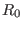
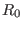
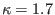
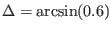
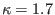
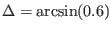

In the fixed boundary equilibrium problem, the shape of the boundary magnetic
surface (it is also the boundary of the computational region, which is usually
the last-closed-flux-surface) is given while the shape of the inner flux
surface is to be solved. A simple analytical expression for a D-shaped
magnetic surface takes the form
with  changing from 0 to
changing from 0 to  . According to the definition in
Eqs. (21), (22), and (24) we can readily
verify that the parameters
. According to the definition in
Eqs. (21), (22), and (24) we can readily
verify that the parameters  , ,
, ,  appearing in Eqs.
(454) and (455) are indeed the minor radius, major radius,
and ellipticity, respectively. According to the definition of triangularity
Eq. (23), the triangularity
appearing in Eqs.
(454) and (455) are indeed the minor radius, major radius,
and ellipticity, respectively. According to the definition of triangularity
Eq. (23), the triangularity  for the magnetic surface
defined by Eqs. (454) and (455) is written as
for the magnetic surface
defined by Eqs. (454) and (455) is written as
Another common expression for the shape of a magnetic surface was given by
Miller[5,10], which is written as
Note that Miller's formula is only slightly different from the formula given
in Eqs. (454) and (455). For Miller's formula, it is easy to
prove that the triangularity is equal to  (instead of
as given in Eq. (456)).
(instead of
as given in Eq. (456)).
In the iterative metric method[7] for solving the fixed
boundary equilibrium problem, we need to provide an initial guess of the shape
of the inner flux surface (this initial guess is used to construct a initial
generalized coordinates system). A common guess of the inner flux surfaces is
given by
where  is a parameter,
is a parameter,  is a label parameter of flux surface. If
the shape of the LCFS is given by Eqs. (454) and (455), then
Eqs. (459) and (460) are written as
is a label parameter of flux surface. If
the shape of the LCFS is given by Eqs. (454) and (455), then
Eqs. (459) and (460) are written as
Fig. 29 plots the shape given by Eqs. (461) and
(462) for 0.4,  ,
,
, and
with varying from zero to one.
,
,
, and
with varying from zero to one.
Figure 29:
Shape of flux surface given by Eqs.
(461) and (462). Left figure: points with the same value
of are connected to show coordinate surface; Right figure: dot
plot. Parameters are 0.4m,
,
,
,
with varying from zero (center) to one
(boundary). The shape parameters of
are chosen according to
the parameters of EAST tokamak.
|
yj
2018-03-09